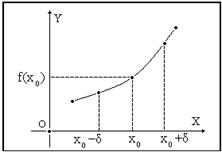
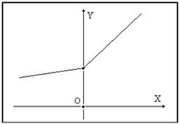
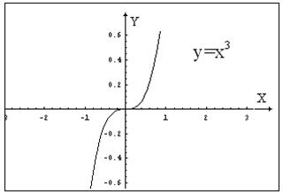

18.1.1. Монотонность функции
Пусть функция  определена на
отрезке . Если для любых из условия следует
неравенство:
определена на
отрезке . Если для любых из условия следует
неравенство:
определена на
отрезке . Если для любых из условия следует
неравенство:1) , то функция неубывающая на ;
неубывающая на ; 2) , то функция возрастающая на ;
возрастающая на ; 3) , то функция невозрастающая на ;
невозрастающая на ;4) , то функция убывающая на .
убывающая на .Функции всех этих типов носят общее название монотонных;
возрастающие и убывающие функции называются строго монотонными.
Пусть функция :
1) непрерывна на отрезке ;
2) имеет производную  по крайней мере на интервале
по крайней мере на интервале
 .
.
:
1) непрерывна на отрезке ;
2) имеет производную по крайней мере на интервале
.Для того чтобы функция на
отрезке была неубывающей (невозрастающей),
необходимо и достаточно выполнение условия
()
для всех точек  из интервала .
из интервала .
на
отрезке была неубывающей (невозрастающей),
необходимо и достаточно выполнение условия
()
для всех точек из интервала .Необходимость.
Пусть функция  является
неубывающей на отрезке .
является
неубывающей на отрезке .
является
неубывающей на отрезке . Докажем, что на интервале производная
.
Возьмем точки и
в интервале .
Так как по условию неубывающая, то при любом (положительном или отрицательном)
знак и  один
и тот же, и поэтому .
один
и тот же, и поэтому .
и
в интервале .
Так как по условию неубывающая, то при любом (положительном или отрицательном)
знак и один
и тот же, и поэтому .Учитывая, что по условию в каждой точке интервала существует
производная , из последнего равенства получим .
интервала существует
производная , из последнего равенства получим .Итак, в любой точке интервала имеем
.
Достаточность.
Пусть на интервале . Докажем, что функция - неубывающая на отрезке . Действительно, пусть - любые две точки отрезка .
- неубывающая на отрезке . Действительно, пусть - любые две точки отрезка .По теореме Лагранжа ,
где . Так как в
каждой точке интервала ,
то и . Кроме того .
Поэтому . Итак, из неравенства следует неравенство , а это и означает, что на отрезке функция неубывающая.
интервала ,
то и . Кроме того .
Поэтому . Итак, из неравенства следует неравенство , а это и означает, что на отрезке функция неубывающая.
Таким образом, интервалы знакопостоянства производной  являются интервалами монотонности
функции .
являются интервалами монотонности
функции .
являются интервалами монотонности
функции .Справедливо следующее утверждение (достаточное условие
возрастания функции): если  на интервале , то на
отрезке возрастает. Однако если возрастает на , то отсюда не следует, что всюду на интервале .
на интервале , то на
отрезке возрастает. Однако если возрастает на , то отсюда не следует, что всюду на интервале .
на интервале , то на
отрезке возрастает. Однако если возрастает на , то отсюда не следует, что всюду на интервале .Функция возрастает на
отрезке , однако ее производная обращается в нуль в точке  .
.
.Рассмотрим возрастание или убывание функции в точке.
Функция называется
возрастающей в точке  , если существует такая
окрестность
, если существует такая
окрестность  точки
точки  ,
в которой для всех
,
в которой для всех  имеем , а для всех
имеем , а для всех  верно
.
верно
.
называется
возрастающей в точке , если существует такая
окрестность точки ,
в которой для всех имеем , а для всех верно
.
Функция называется
убывающей в точке , если существует такая
окрестность точки ,
в которой для всех имеем , а для всех верно
.
называется
убывающей в точке , если существует такая
окрестность точки ,
в которой для всех имеем , а для всех верно
.Следующая теорема выражает достаточные условия возрастания и
убывания функции в точке.
Пусть функция в точке имеет производную . Если ,
то функция в точке возрастает;
если , то в
точке убывает.
в точке имеет производную . Если ,
то функция в точке возрастает;
если , то в
точке убывает.Доказательство:
Пусть . Это означает,
что
.
Но тогда существует такое  ,
что для всех
,
что для всех  , удовлетворяющих условию , верно неравенство
, удовлетворяющих условию , верно неравенство
,
что для всех , удовлетворяющих условию , верно неравенство .
Отсюда следует, что при величины
и имеют
один и тот же знак: если , то и , т.е. ;
если же , то и ,
т.е. . Согласно определению, это и
означает, что функция в точке возрастает.
имеют
один и тот же знак: если , то и , т.е. ;
если же , то и ,
т.е. . Согласно определению, это и
означает, что функция в точке возрастает. Аналогично можно доказать, что если , то функция в
точке убывает.
в
точке убывает.Теорема дает достаточные, но не необходимые условия
возрастания и убывания функции в точке. Так, функция, график которой приведен
на рисунке ниже, возрастает в точке , но в этой точке
производная функции не существует.
, но в этой точке
производная функции не существует.
Функция возрастает в
точке , но ее производная в точке обращается
в нуль.
, но ее производная в точке обращается
в нуль. 